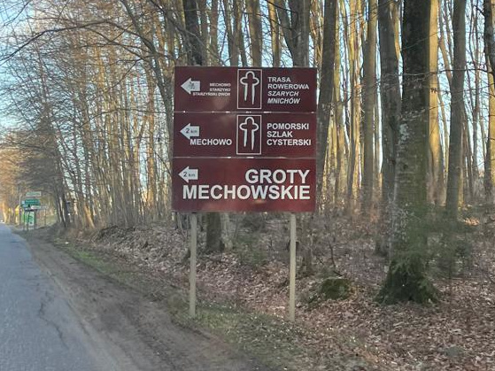
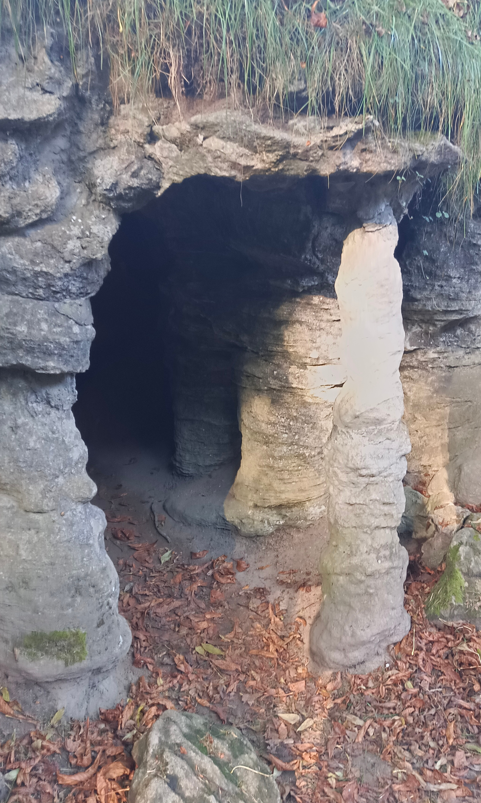
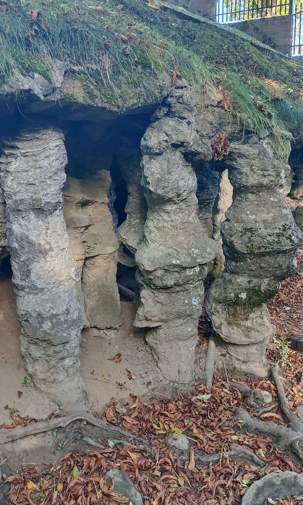
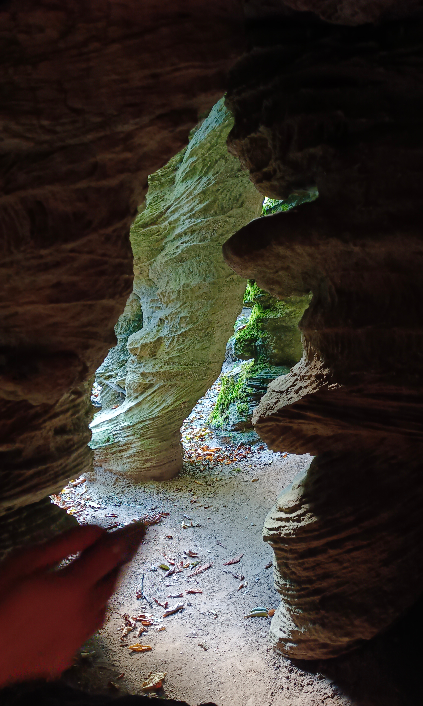
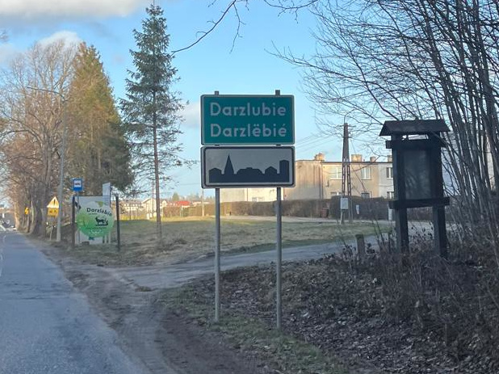
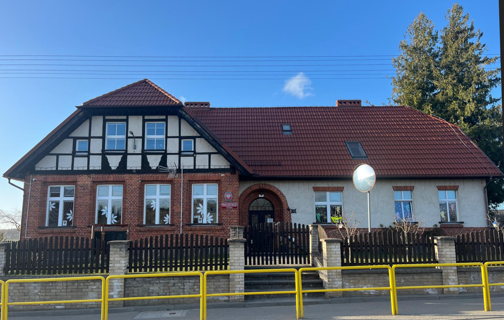
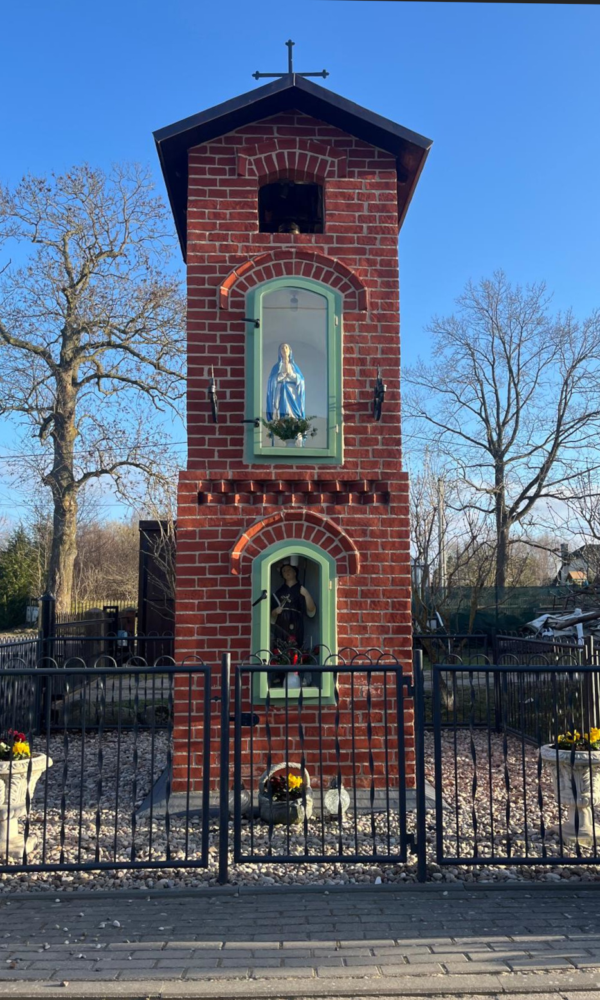

Wycieczka do Grot Mechowskich i Darzlubia. Pomysł na wycieczkę z dziećmi blisko Rumii
Mam dla Was świetną propozycję. Nasze przedszkole Rumia leży zaledwie 25–30 minut jazdy od dwóch wyjątkowych miejsc: Groty Mechowskie jedyna jaskinia turystyczna na Pomorzu oraz urokliwa wieś Darzlubie z bogatą historią sięgającą XIII wieku. Oba miejsca dzieli zaledwie kilka minut jazdy, więc to idealny pomysł na jednodniową wyprawę z dziećmi!
Groty Mechowskie prawdziwa jaskinia tuż za rogiem!
Pierwszym przystankiem wyprawy powinny być Groty Mechowskie jedyna jaskinia turystyczna na Pomorzu, położona we wsi Mechowo w gminie Puck. Dla przedszkolaka wejście do prawdziwej jaskini to niezapomniane przeżycie!

Co można zobaczyć?
Groty Mechowskie to jaskinia o długości 61 metrów, która powstała w gruboziarnistych piaskowcach i zlepieńcach. Przesączające się wody przez tysiąclecia wymywały luźniejszy materiał, tworząc tajemnicze podziemne komory i korytarze. Dzieci z pewnością będą zachwycone skalnymi kolumnami z piaskowca, które wyglądają jak filary podtrzymujące sufit jaskini.

Szczególne wrażenie robią formy naciekowe, niewielkie stalaktyty, żebra i polewy, częściowo zabarwione na czerwono dzięki obecności związków żelaza. Maluchy na pewno zaczną szukać „skalnych sopli" i wymyślać historie o tym, kto mógł tu mieszkać tysiące lat temu.

Trasa turystyczna
Udostępniona dla turystów część jaskini jest oświetlona elektrycznie, a zwiedzanie trwa kilka minut. To idealny czas dla przedszkolaków, które chłoną wrażenia, ale potrzebują też ruchu i przestrzeni. Wejście jest płatne, ale cena jest symboliczna i absolutnie warta przeżycia.

Ciekawostki dla małych odkrywców
- Groty Mechowskie są pomnikiem przyrody nieożywionej to
świetna okazja, żeby porozmawiać z dziećmi o ochronie przyrody.
- Najstarsza wzmianka o jaskini pochodzi z 1818 roku, ale
okoliczna ludność znała ją znacznie wcześniej.
- W 1908 roku władze pruskie uznały grotę za pomnik natury a
więc jaskinia jest chroniona od ponad stu lat!
- Przez jaskinie przebiega Szlak Grot Mechowskich jeden ze
znakowanych szlaków turystycznych województwa pomorskiego.
Darzlubie kaszubska wieś z duszą

Po wizycie w grotach wystarczy przejechać kilka minut do Darzlubia malowniczej wsi kaszubskiej, która kryje w sobie bogatą historię sięgającą XIII wieku.
Historia, która fascynuje
Pierwsze wzmianki o Darzlubiu pochodzą z roku 1296 wówczas wieś nosiła nazwę „Darsolube" i była własnością rycerza Radosława ze Strugi. W 1333 roku trafiła w ręce cystersów oliwskich, którzy otrzymali ją od Krzyżaków. Cystersi gospodarowali tu aż do 1772 roku, to prawie 450 lat!

Dla dzieci to fantastyczna lekcja historii można opowiedzieć im o rycerzach, zakonnikach i dawnych czasach, kiedy po tych samych drogach jeździły konie, a nie samochody.
Co warto zobaczyć?
- Przydrożna kapliczka św. Rozalii patronki Darzlubia,
pochodząca z pierwszej połowy XIX wieku. Piękna, kameralna, otoczona
zielenią. Dzieci mogą ją podziwiać i dowiedzieć się, kim była święta
Rozalia.
- Domy o konstrukcji szkieletowej tradycyjna architektura
kaszubska, która wyróżnia się na tle nowoczesnej zabudowy.
- Widoki na Kępę Pucką - okolica jest wspaniale zielona, z
łagodnymi wzniesieniami typowymi dla krajobrazu morenowego Kaszub.

Puszcza Darżlubska i rezerwat Darżlubskie Buki
Na zachód od Darzlubia rozciąga się Puszcza Darżlubska rozległy kompleks leśny, od którego nazwy wzięła właśnie ta wieś. W pobliżu znajduje się również rezerwat przyrody Darżlubskie Buki śródleśny rezerwat chroniący starodrzew bukowy. To magiczne miejsce na krótki spacer z dziećmi, gdzie można posłuchać ptaków, poszukać grzybów i po prostu odetchnąć leśnym powietrzem.
Zabierzcie swoje dzieci na przygodę!
Wycieczka do Grot Mechowskich i Darzlubia to pomysł, który gwarantuje uśmiechy, zadziwienie i tysiąc pytań od Waszych maluchów. Wspólne odkrywanie kaszubskich skarbów przyrody i historii, to doświadczenie, które zostaje na długo.